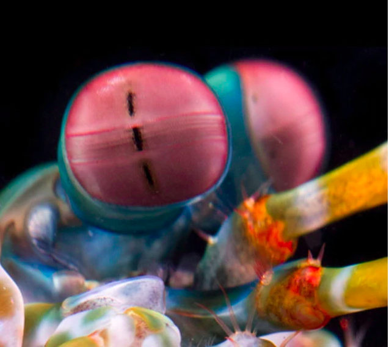

Soco a 80km/h: Conheça o Stomatopoda.
Informações Gerais
Stomatopoda (ou estomatópode), chamados popularmente de tamarutacas
ou de lacraias-do-mar no Brasil, é uma ordem de crustáceos marinhos
da subclasse Hoplocarida, que agrupa cerca de 400 espécies,
caracterizadas principalmente pela morfologia da segunda pata
torácica, que é modificada em apêndice subquelado, lembrando uma
pata de louva-a-deus.
Seu nome científico é
Odontodactylus scyllarus e também
é conhecido como lagosta-boxeadora.
.
Classificação Científica
Reino: Animalia
Filo: Arthropoda
Subfilo: Crustacea
Classe: Malacostraca
Subclasse: Hoplocarida
Ordem: Stomatopoda
Latreille, 1817
Fatos sobre o Stomatopoda
Seus olhos contêm milhões de células
sensitivas, contando com 16 cones
que captam cores.

É uma das criaturas
mais violentas do planeta.
Conseguem quebrar o vidro do aquário,
pois seus golpes atingem a velocidade de 80 km/h.